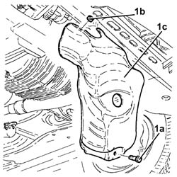

1076A70 HEAT SHIELD FOR LEFT CATALYTIC PRECONVERTER R R
- Path
- Procedures > 10 ENGINE UNIT > 1076 EXHAUST PIPES AND SILENCERS > 1076A EXHAUST PIPE FASTENINGS AND PROTECTIONS > 1076A70 HEAT SHIELD FOR LEFT CATALYTIC PRECONVERTER R R
- Kind
- repair procedure (removal / refitting; the operation number is the code)
- Applies to
- engines: 3.2 V6; all production periods
- Interactive page
- https://sloeber94.github.io/elrnDB-aGt/en/#/125001094
Applies to: engines: 3.2 V6; all production periods
 Removing
Removing
 Refitting
RefittingPosition the vehicle on the ramp
Ensure that the ignition key is in the OFF position, then disconnect the negative battery terminal (-).
Name | Connector | |
|---|---|---|
- | Battery | See A1B BATTERY ( BATTERY NEGATIVE ) |
Proceed with removal
Op. 7055B54 UNDER-ENGINE GUARD - R R
Proceed with removal
1. Undo the bolt (1a) and the nuts (1b) and remove the heat shield for the left catalytic preconverter (1c).
Op. 1080B92 LEFT UPPER LAMBDA SENSOR R R

Applies to: engines: 3.2 V6; all production periods
Refitting
RemovingPlace the heat shield for the left catalytic preconverter back in its housing, then fasten it using the bolt and the nuts.
Proceed with refitting
Op. 1080B92 LEFT UPPER LAMBDA SENSOR R R.
Proceed with refitting
Op. 7055B54 UNDER-ENGINE GUARD - R R.
Connect the negative (-) battery terminal
Remove the car from the ramps.